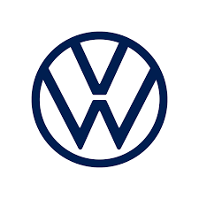

<label>Volkswagen

    Volkswagen do Brasil
    Escritório do CEO
    Av. das Indústrias, 1000
    São Bernardo do Campo - SP
    Brasil
    
    04 de julho de 2023
    
    Caros entusiastas da Volkswagen,
    
    Hoje, com grande satisfação, anunciamos uma parceria estratégica empolgante entre a Volkswagen do Brasil e a Capelcar. Essa colaboração representa um novo marco em nossa busca contínua pela excelência e inovação no mercado automotivo brasileiro.
    
    A Volkswagen sempre foi uma marca reconhecida por sua qualidade, confiabilidade e inovação. Temos o compromisso de oferecer veículos que atendam às necessidades e desejos de nossos clientes. Agora, com a parceria da Capelcar, estamos entusiasmados em expandir ainda mais nossa presença e oferecer uma experiência de compra e venda de carros única aos nossos clientes.
    
    A Capelcar é uma empresa respeitada e experiente no mercado de compra e venda de carros, trazendo consigo um profundo conhecimento do mercado automotivo brasileiro. Essa parceria estratégica nos permitirá aproveitar essa expertise para aprimorar nossas operações e fornecer soluções personalizadas e convenientes para nossos clientes.
    
    Estamos empenhados em oferecer veículos de alta qualidade, tecnologicamente avançados e serviços excepcionais. Combinando a visão da Volkswagen e a experiência da Capelcar, buscamos criar uma experiência de compra e venda de carros memorável, que exceda as expectativas de nossos clientes em todos os aspectos.
    
    Além disso, compartilhamos o compromisso com a sustentabilidade. Trabalharemos juntos para promover práticas responsáveis e soluções que contribuam para um futuro mais limpo e sustentável. Queremos ser uma força motriz de mudanças positivas na indústria automotiva, onde a mobilidade e a preservação do meio ambiente caminhem lado a lado.
    
    Agradeço a todos os envolvidos nesta parceria emocionante. Com a união entre a Volkswagen do Brasil e a Capelcar, estamos confiantes de que alcançaremos novos patamares de sucesso, continuando a oferecer aos nossos clientes experiências automotivas excepcionais.
    
    Vamos seguir adiante, impulsionados pela paixão pela inovação e determinação em moldar o futuro da mobilidade no Brasil!
    
    Com os melhores cumprimentos,
    
    [pablo di si]</label>